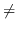
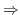
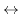

Next: 自然実験 Up: 「原因と結果」の経済学 Previous: 根拠のない通説にだまされないために
デンマークにおけるメタボ健診の研究
なお，「健診  検診」なので注意（後者には寿命を延ばす効果があることが確認されていることが多い）
ランド医療保険実験（ジョセフ・ニューハウス＠ハーバード大）
 医療費の自己負担割合の増加はコンビニ受診を防ぎ，国全体の医療費の抑制につながる。
参考：スケアード・ストレート（怖いと感じさせることで正しい行動を取ることの必要性を学ばせること）
スケアード・ストレートを経験した若者が犯罪にかかわらなくなったというテレビ報道（1970年代アメリカ） ※ 単なる前後比較
ランダム化比較試験では，受講した若者のほうがその後犯罪に関わる確率が高くなることが示唆された
（参考）ホルモン補充療法：女性ホルモンが動脈硬化のリスクを下げるという仮説にもとづき，閉経後の女性に女性ホルモンを補充して心筋梗塞のリスクを下げようとする治療（受けた患者は心筋梗塞のリスクが低く，更年期障害を緩和する効果があると言われていた）
1990年代後半に開始したランダム化比較試験
（参考）もともと，ホルモン補充療法を自己選択により受けていた女性は教育レベルや所得が高く，健康志向だった。
ビジネスの世界で取り入れられたランダム化比較試験（インターネットのショッピングサイトで，同じ商品でもアクセスしている場所やユーザによって画像やバナー，キャッチコピーを変えて購買行動の違いを比較する）
クレジット・インデムニティ（南アフリカの金融機関）によるA/Bテスト
チェリー・ピッキング（サクランボ狩り）：自分の都合のいい論文の結論だけを正しいとする行為
国立がん研究センター：メタアナリシスにより，受動喫煙により肺癌のリスクが1.3倍上昇するという示唆
 「統計的に有意でない結果を統合したもの」で「受動喫煙と肺がんの関係が確実になったと結論づけることは，困難」（JT）
Taichi Okumura